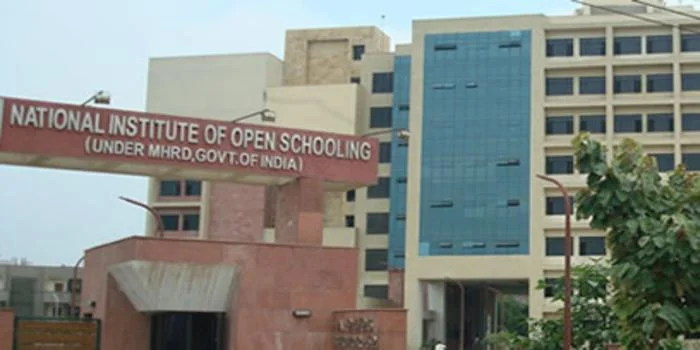

National Institute of Open School was set up in the year November 1989. It is often abbreviated as NIOS. National Institute of Open School was known as National Open School. This is an autonomous organization following National Policy on Education 1986 by the Ministry of Education (MOE), Government of India. NIOS is the best board for the students who seek admission for distance education. Along with General and Academic Courses at Secondary and Senior Secondary level, NIOS provides a number of Vocational, Life Enrichment and community-oriented courses. Also, NIOS offers Elementary level Courses via its Open Basic Education Programs (OBE).
